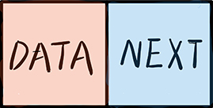
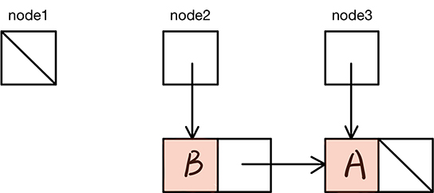

单链表结构
单链表是一种链式存取的数据结构，用一组地址任意的存储单元存放线性表中的数据元素。链表中的数据是以结点来表示的，每个结点的构成：元素(数据元素的映象)
+
指针(指示后继元素存储位置)，元素就是存储数据的存储单元，指针就是连接每个结点的地址数据。
单链表的节点
单链表节点的结构如下图所示，它包含了两个部分:

使用Python表示单链表的节点:
class Node(object):
def __init__(self, data, next):
self.data = data
self.next = next使用单链表节点类
节点变量可初始化为None或一个新的node对象
node1 = None
node2 = Node("A", None)
node3 = Node("B", node2)以上三个节点的状态如图:

以上的三个节点:
单链表结构上的操作
遍历

probe = head
while probe != None:
probe = probe.next搜索
搜索目标项时，可能会出现以下两种情况:
probe = head
while probe != None and targetItem != probe.data:
probe = probe.next
if probe != None:
print("目标值存在!")
else:
print("目标值不存在!")访问第i项:
probe = head
while index > 0:
probe = probe.next
return probe.data替换
将链表中某一节点的值替换为另一个值
probe = head
while probe != None and targetItem != probe.data:
probe = probe.next
if probe != None:
probe.data = newItem
return True
else:
return false替换链表中的第i项
probe = head
while index > 0:
probe = probe.next
index = -1
probe.data = newItem
在开始处插入
head的初始状态